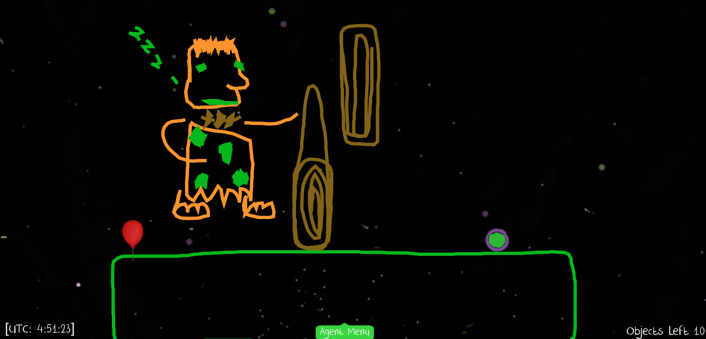

Physics Playground Overview
Physics Playround: An educational game to promote physics understanding
Intervention:
Physics Playground (PP) is a 2D computer game designed to assess and support students’ understanding of qualitative physics in real-time. The game covers 9 key physics competencies (e.g., Newton’s 3 Laws of Force & Motion). The goal in every game level is to guide a green ball to hit a red balloon. Players are free to choose any of the 110 game levels to play with two types of levels to choose from. In sketching levels, players draw simple machines to solve levels. In manipulation levels, players adjust physics parameters to solve levels. Students use of the game level’s physics in their solutions is rewarded with gold coins. The most recent focus was on designing and embedding various cognitive supports (e.g., short physics videos, like this one on potential energy) and affective supports (e.g., like this breathing exercise). The game can be used for in-class, remote, or hybrid teaching and learning for 8th to 11th grade students.
Research Base:
Our first large scale study showed using the embedded physics videos as a support had a significant, positive impact on students’ physics learning, game performance, and enjoyment. Since, we have examined the impact of affective supports on learning and interest in science. We expect the affective supports to fuel motivation when students succeed and encourage persistence when they fail. Moreover, we finalized a quit-prediction model to help determine if a student is going to quit in the next 20 seconds. If so, the game could intervene with a suitable affective support to help the student continue playing. We also investigated the effects of several types of in-game affective supports including motivational messages and automated affect detectors (i.e., interaction-based vs. webcam-based detectors). Over the past 6 years we conducted multiple usability studies with over 300 8th to 11th graders from K-12 schools located at various sites (Florida, Pennsylvania, and New York), and three larger scale experiments. In Experiment 1 we evaluated the effects of cognitive supports. In Experiment 2, we investigated the delivery method of the cognitive supports (i.e., before or after playing a level). In Experiment 3, we examined the benefits of various affective supports and the effects of cognitive and affective supports delivery.
To read more about our findings see this page: https://pluto.coe.fsu.edu/ppteam/pp-resources-for-teachers/
Industry Honors & Awards for Innovation:
A few honors include an NPR interview with Shute (2020, “Should this exist” podcast), best student paper award at ICMI (2019), feature article in the APA Monitor (2019), and various other best paper and best student paper awards.
How to Access Physics Playground:
Physics Playground is a web-based game accessible on the internet across platforms that support Unity WebGL (currently excluding mobile devices). Use the following links for the game:
Version 1: With Store: https://pluto.coe.fsu.edu/PP/demostore.html
Version 2: Without Store: https://pluto.coe.fsu.edu/PP/demo.html
Level Editor: https://pluto.coe.fsu.edu/PP/editor.html
Username: demo2
Password: demo2pass
Government Awards Supporting R&D:
This report is based on research supported by Institute of Education Sciences, U.S. Department of Education to Florida State University.
- “Exploring adaptive cognitive and affective learning support for next-generation STEM learning games.” (Institute of Education Sciences award no. R305A170376, Val Shute and Russell Almond, PIs)
Additional support (for previous version of Physics Playground and the Peanut and Proc4 scoring engines) was provided by:
‘Bill & Melinda Gates Foundation grant “Games as Learning/Assessment: Stealth Assessment” (no. 0PP1035331, Val Shute, PI)’,
‘National Science Foundation grant “DIP: Game-based Assessment and Support of STEM-related Competencies” (no. 1628937, Val Shute, PI)’,
‘National Science Foundation grant “Mathematical Learning via Architectual Design and Modeling Using E-Rebuild.” (no. 1720533, Fengfeng Ke, PI)’,
Overview of Physics Playground
The Game
Game Videos
Video Overview
Physics Playground Short Film: https://www.youtube.com/watch?v=HqIY9x5dUf0
Drawing Levels
Video 1. The sketching level “Caveman.” The path of the green ball is blocked by a wooden club. To solve the level, players need to draw a lever to lift the wooden club that blocks the path.
 Figure 1. The sketching level “Caveman.” The path of the green ball is blocked by a wooden club.
Figure 2. Worked example of the sketching level “Caveman.” To solve the level, players need to draw a lever to lift the wooden club that blocks the path.
Manipulation Levels
Video 2. The manipulation level “Cookie Monster.” In the level, mass and gravity are set to default levels, air resistance is medium, the static blower is in full force, and bounciness is available. To make the ball hit the balloon, players need to reduce air resistance and gravity and enable bounciness.
Figure 3. The manipulation level “Cookie Monster.” In the level, mass and gravity are set to default levels, air resistance is medium, the static blower is in full force, and bounciness is available.

Figure 4. Worked example of the manipulation level “Cookie Monster.” To make the ball hit the balloon, players need to reduce air resistance and gravity and enable bounciness.
Learning Supports
Cognitvie Supports
As part of the project, the team designed and developed a set of in-game cognitive supports. The iterative design and development process used is described in (Shute2021a?)
Final set of in-game cognitive supports
- physics videos,
- interactive definitions,
- formulas,
- Hewitt videos,
- glossary,
- worked examples,
- hints, and
- game tips.
- Final Cognitive Support Design